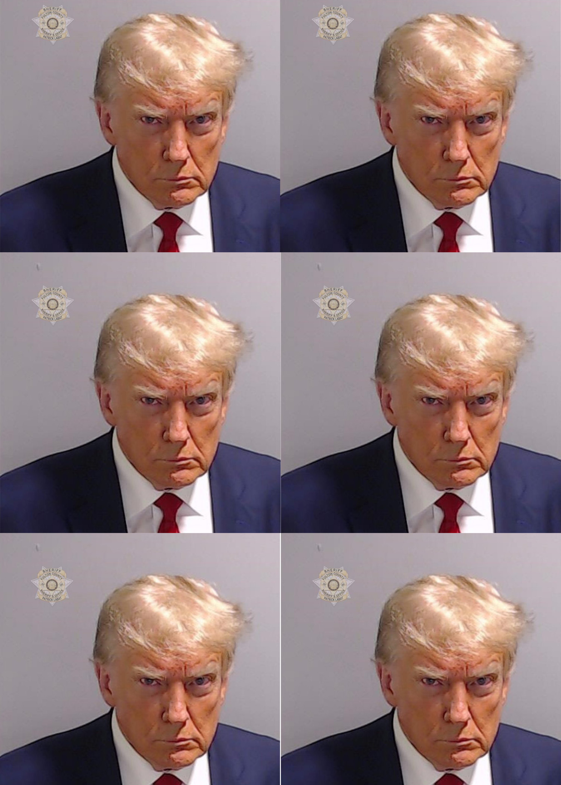

I decided to show both of my drafts to sort of show my thought process and work throughout the process. In the first draft I really liked the simpleness of the window with the letters for revolt on it but it didn’t feel like it had an impact in the message as the window doesn’t really add any value that I put on purpose to revolt, it just kinda looked cool. So I wanted to put pictures of some recent protests that were going on. I got these pictures from The Guardian. There are pictures from the No Kings Protest, tons of protests for Palestine from around the world in places like Spain, France, and England, and protests against the Indonesian government. And pictures of some people from Gaza. This felt important to include as it shows that people are speaking up around the world and it feels like the whole globe wants to revolt against a genocide. Protests seem to have been on the rise since the pandemic and this helps people feel like they have more of a chance to stand for what is right. The message is quite overt, but I don’t think I’m great at hiding meaning so it is what it is. I feel like this final draft looks a bit cluttered and not as clean as the first draft however, the world is in a chaotic state so I suppose it adds to that. I used masking to try to get the images of the different protests to flow together and blended out some of the edges that were covering important details. Overall for the first collage I’m not the most pleased with it but it got me to learn the basics of collage making.
My second collage depicts the Trump administration in Nazi Germany with Hitler and his closest allies being replaced by Trump and some of his allies currently. I mainly just used the lasso tool for this one. I needed to try to place the people on the table as the Nazis were so I needed to make things like the table and microphones a different layer so it could look like they were in it. The remove tool was also helpful in removing the people that were previously there. The image of the building they are standing in was from the wikimedia commons as well as the letters for “The New Order”, and the rest were found online.
Overall, I could’ve improved upon my work if I used more unique blending styles but I kinda forgot how to do that stuff. I may need to rewatch those LinkedIn Learning videos. But below is a sort of parody I guess you can call it of the many faces of Hitler. Which was created because the CIA was afraid that Hitler would disguise himself to hide from the United States.But this guy doesn't even need to do that, just gets off with a slap on the wrist.
